Rincón Santa María · Ituzaingó · Corrientes
El río tiene
su lugar.
Playa, cantina, música y encuentros que se quedan un rato más.
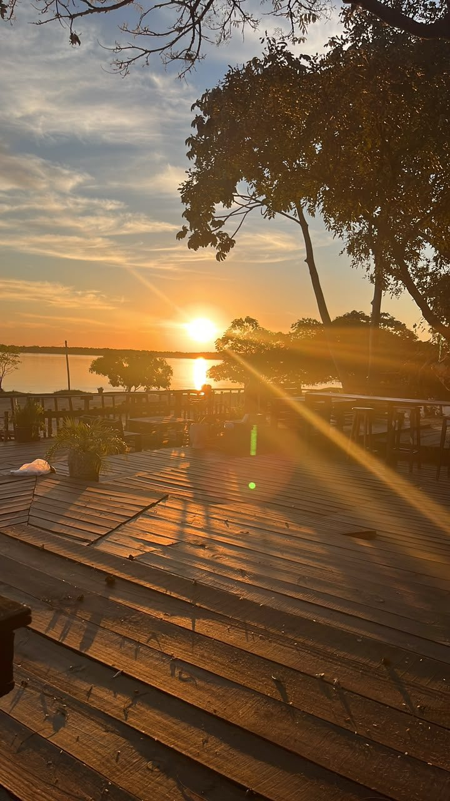
SERVICIOS DE PLAYA
Y CANTINA
A orillas del Paraná
Un rincón para volver a respirar.
Entre arena, sombra y río, María Beach es una pausa que se transforma con el día. Vení a pasarla bien, sin apuro.
TODO EL AÑORINCÓN
SANTA MARÍA
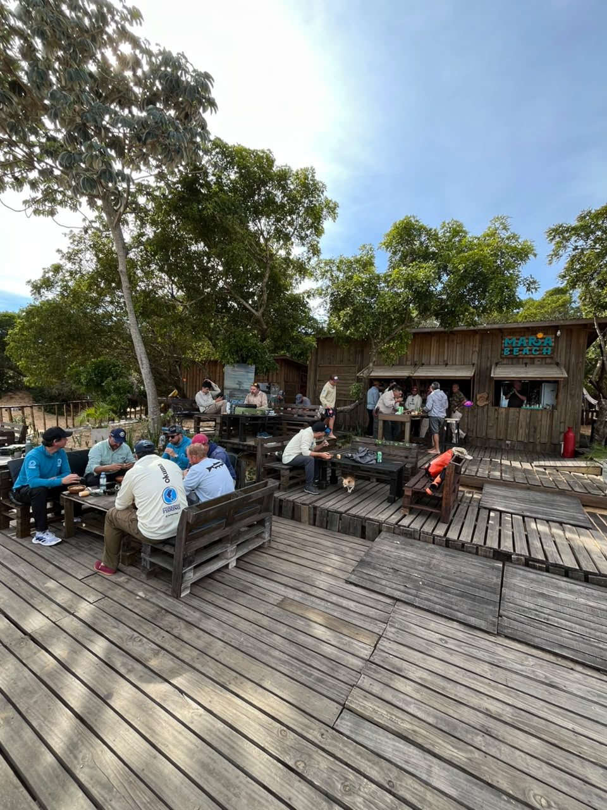
Una luz distinta
para cada momento.
DÍA
Todo empieza
junto al agua.
Río, playa y cantina. El plan se arma solo.
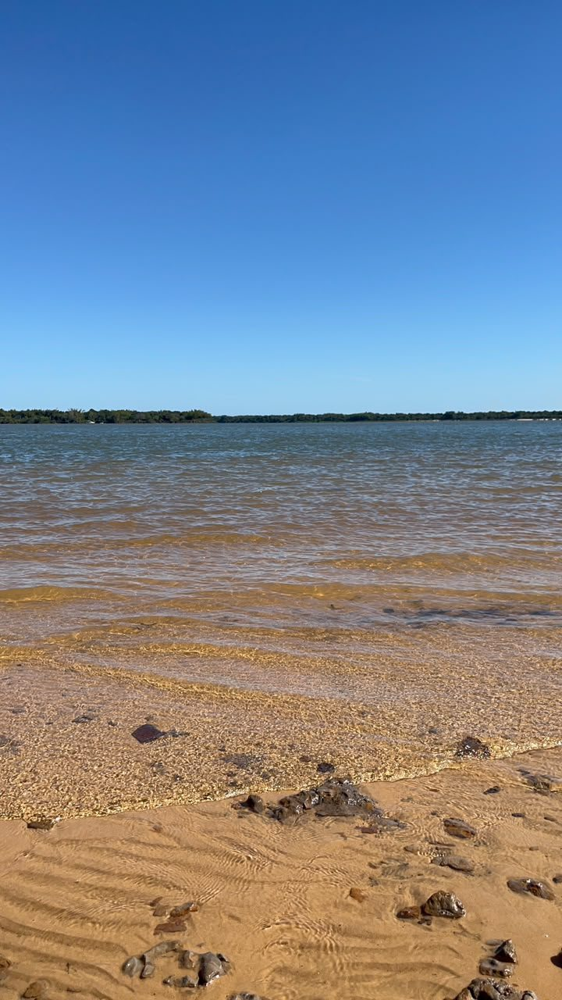
SUNSET
Cuando el cielo
marca el ritmo.
Drinks, amigos y esa hora que no pide explicación.
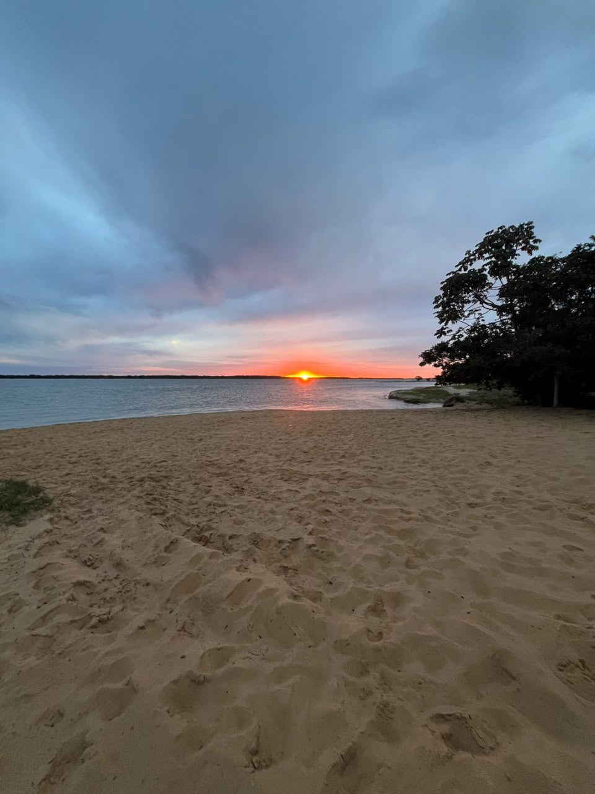
NOCHE
La música
sigue cerca.
Cuando hay encuentro, el río marca el ritmo.
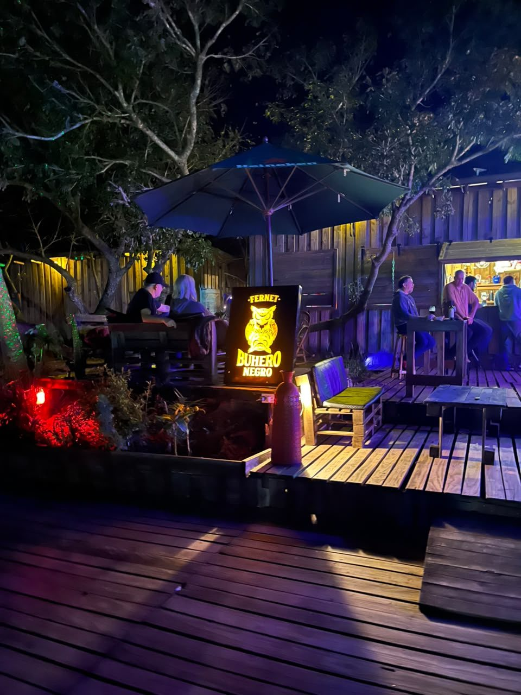
FOOD & DRINKS
Para
acompañar
la orilla.
Una cantina de playa para hacer una pausa, brindar y seguir cerca del río.
Ver novedades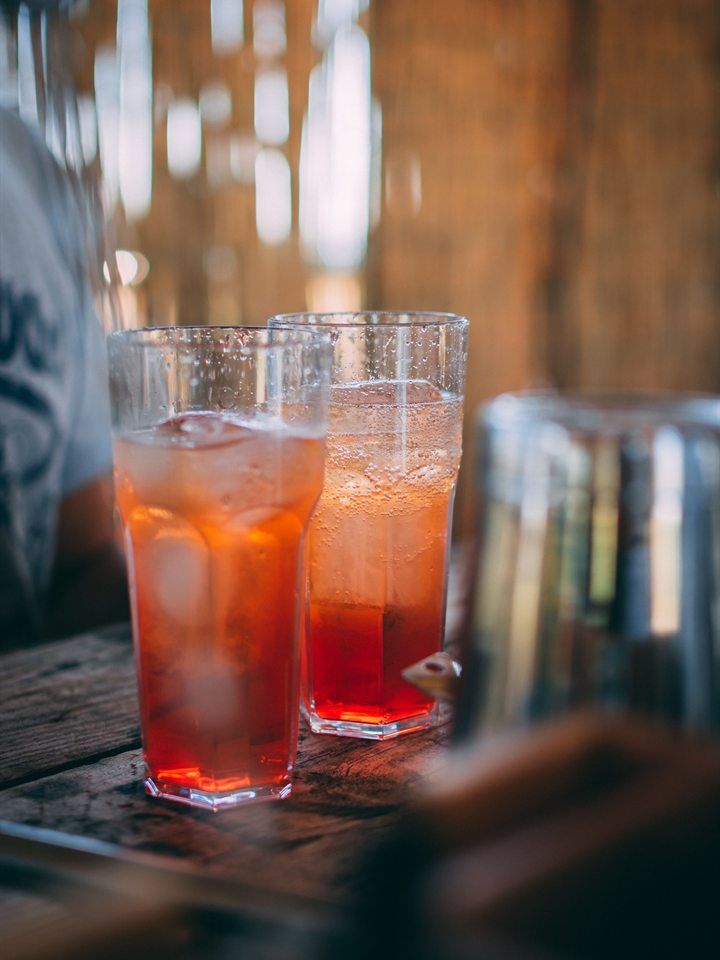
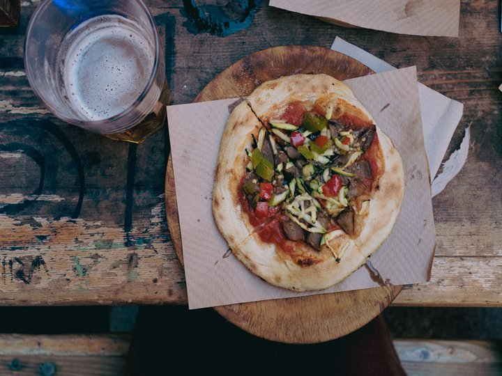
EL RÍO TAMBIÉN SUENA
Planificá menos.
Viví más.
MARÍA BEACH
RINCÓN SANTA MARÍA
PRÓXIMAS
FECHAS
NOVEDADES EN INSTAGRAMPara guardar
en la memoria.
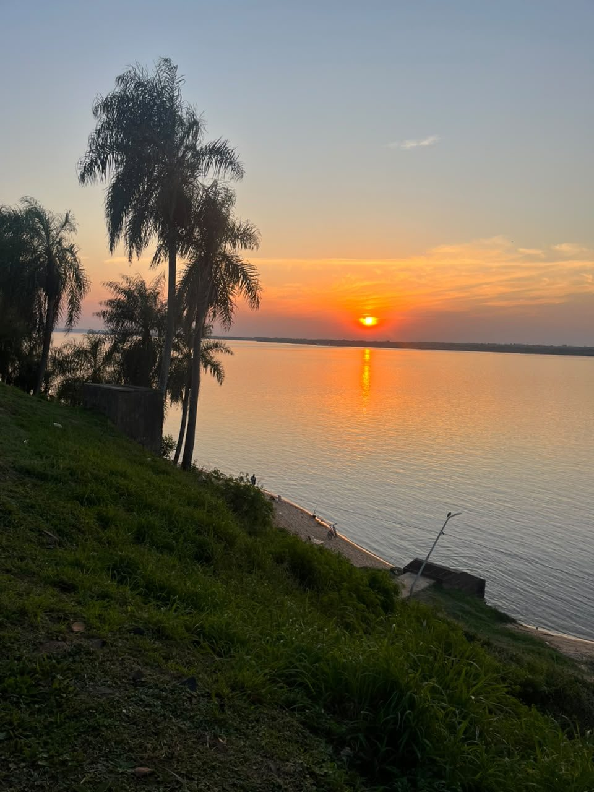
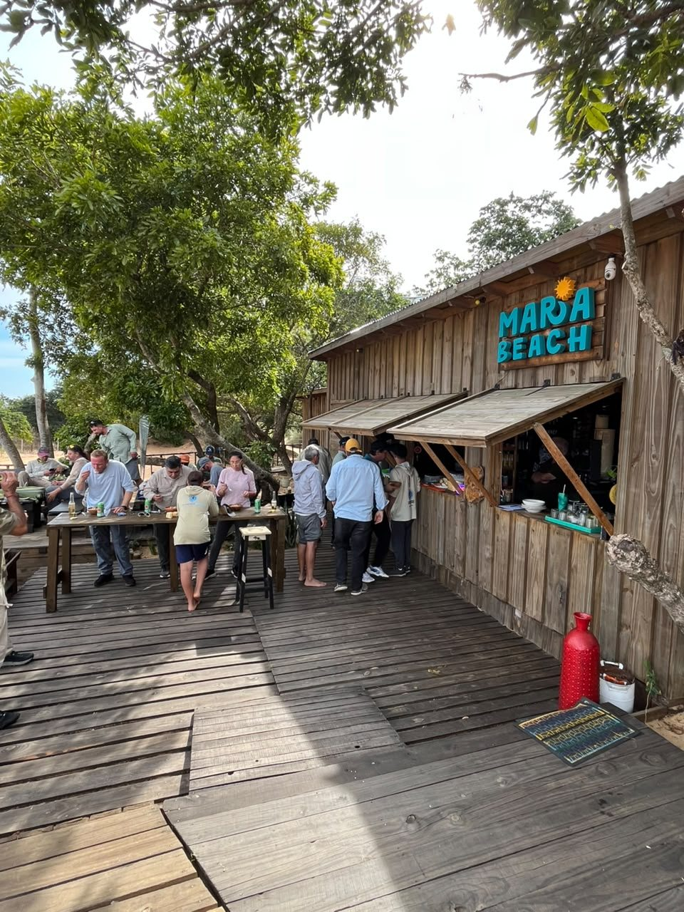
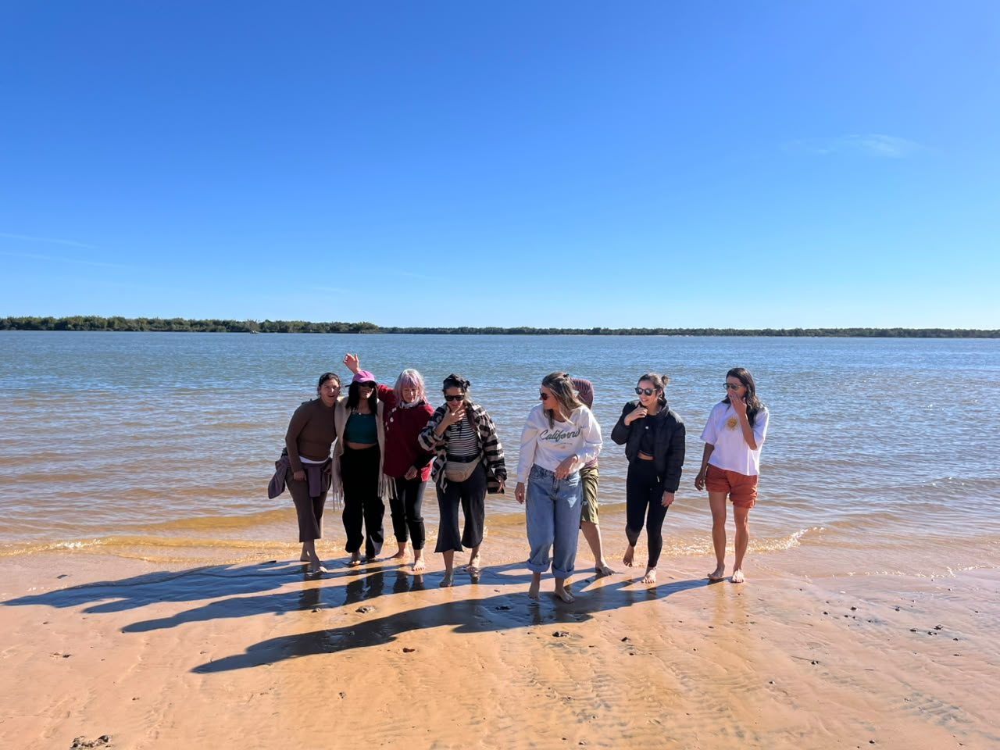
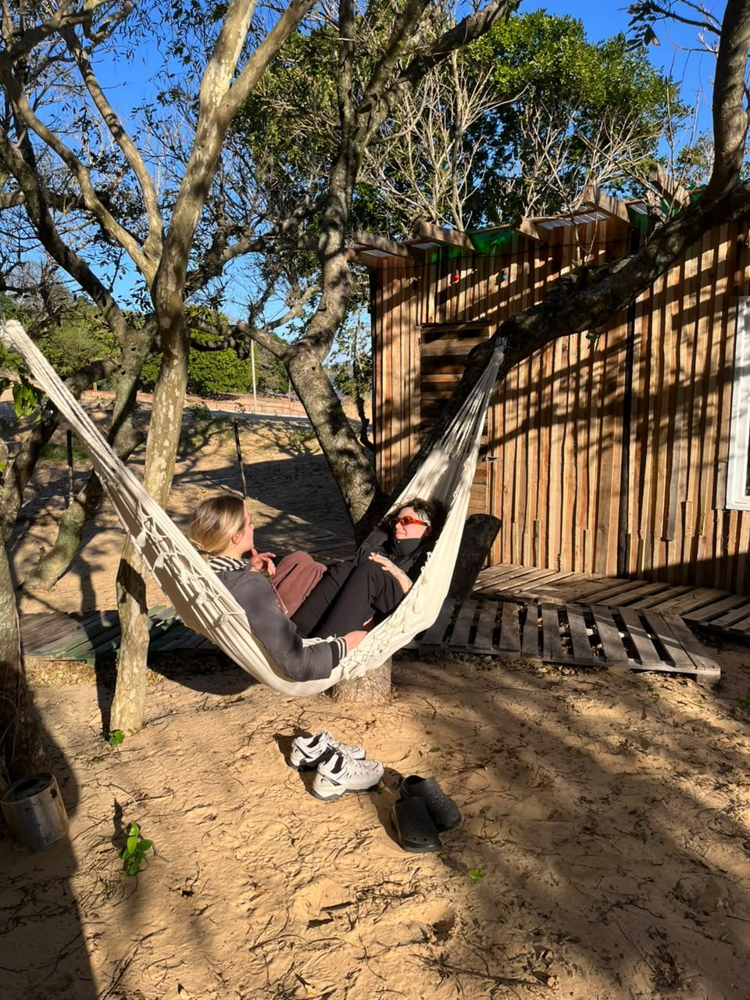
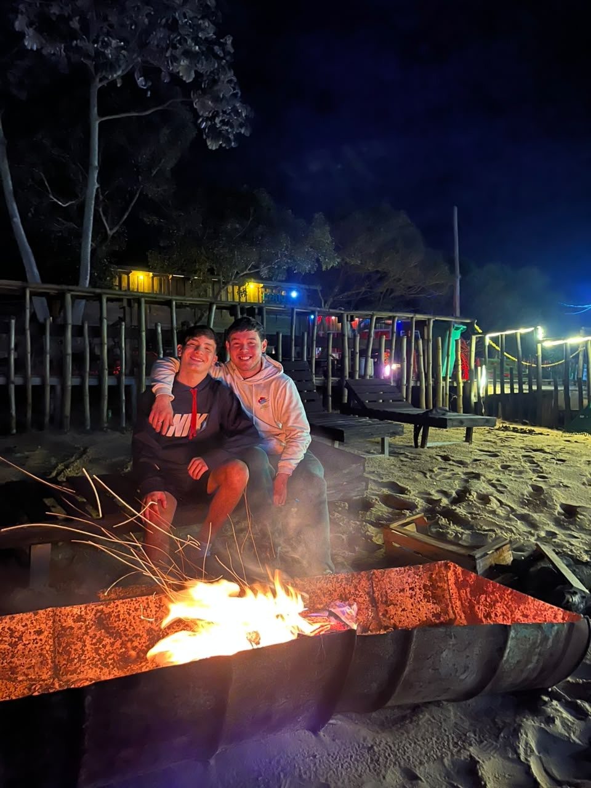
A ORILLAS DEL PARANÁ
Rincón
Santa María.
Bajada de lanchas · Sector derecho de la playa
Ituzaingó, Corrientes
RESERVAS · EVENTOS · CONSULTAS